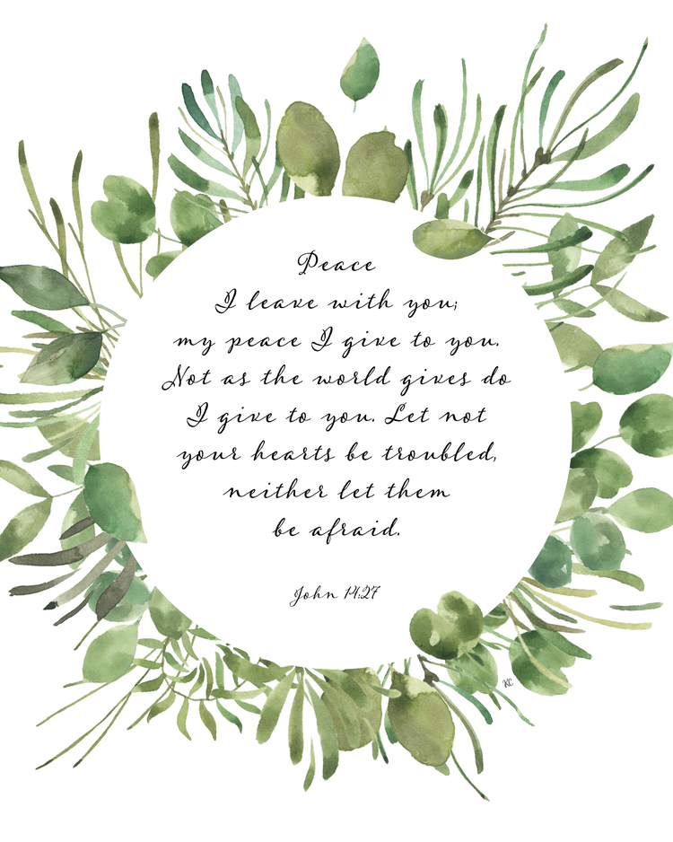

The Inevitability of L's.
October 1, 2021 by Juddy-Shae Wallace
Have you ever lost something before? I know right? Of course you have! There isn't a single human on this earth who can attest to never having lost something. Hopefully for you, it's something replaceable because the impact of loss never truly hits home until we realize how invaluable it was. The sad thing is, loss isn't just limited to physical possessions.
Over the course of our lives, we will lose our innocence as we venture along the path of life. We will also lose our youthfulness; others will lose their health, their teeth; others will lose their figure, hair, and sight; but what's common to all is that we must lose someone. Whether a parent; a partner; a friend or foe; we all must go. The mistake that a lot of us make is that we dread the dark unknown, because ever since birth we have only known how to exist. If we are blessed, we may live to see 70, which seems like a long time for us; but to other creatures, its hardly any time at all. Take, for example, turtles and tortoises or even trees. They are mortal like us, they know they must die but they do not dread the loss nor the passing.
It's true, however; that there is much to fear in death; and since we can not avoid it, we can derive from it a lesson. We won't live forever, and the time we have is much too short. Death and loss help us to appreciate what we would have taken for granted if it were not so. The great equaliser is out for everyone, but a life well lived is a life well loved.